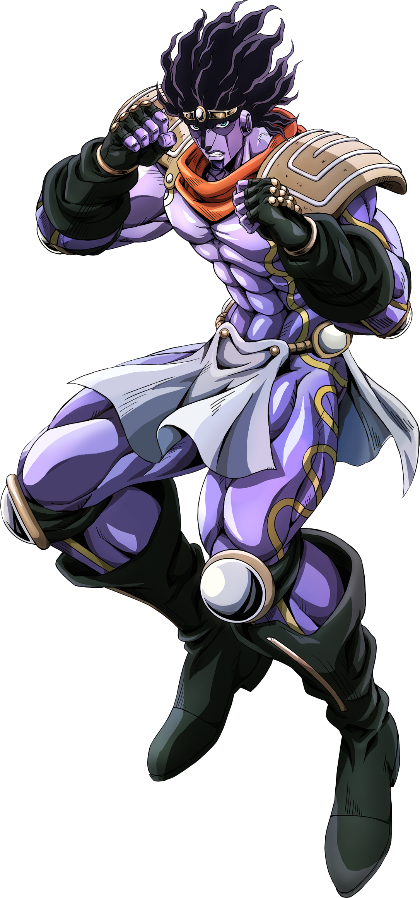
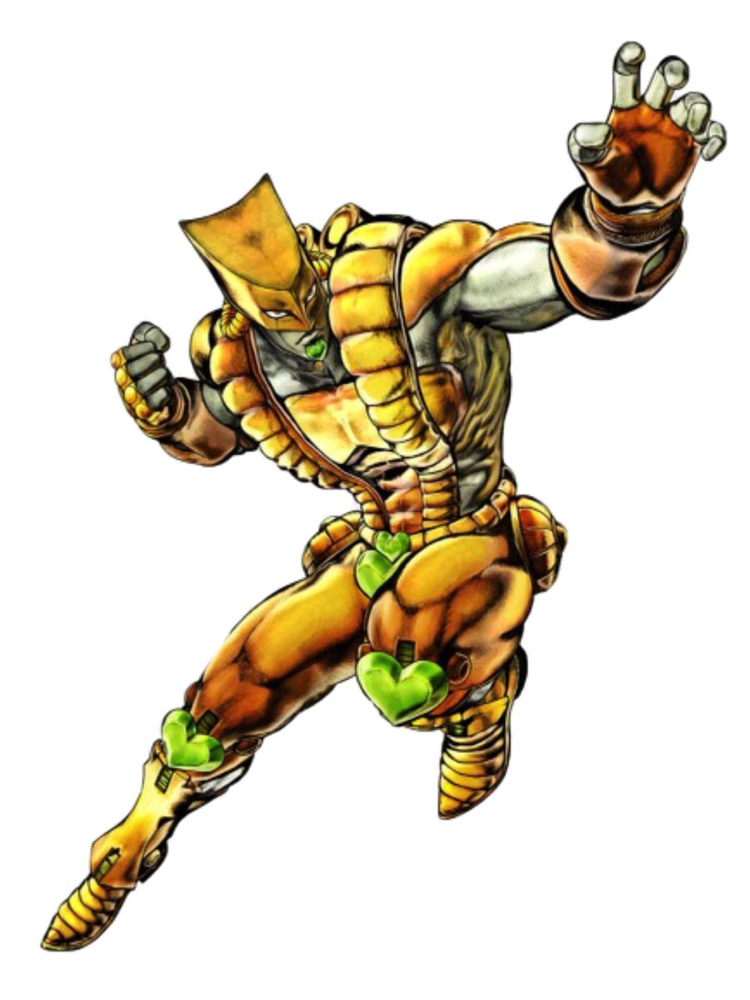
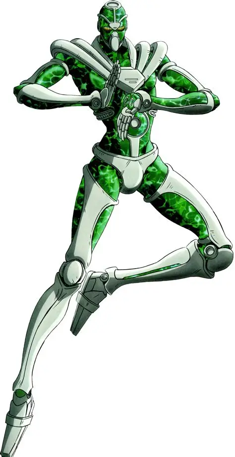
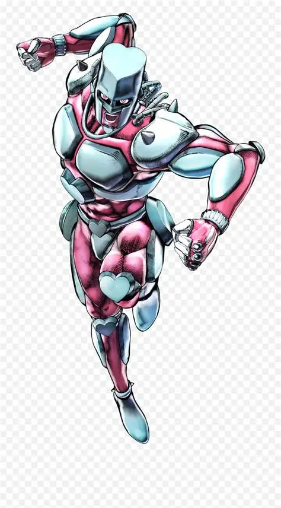
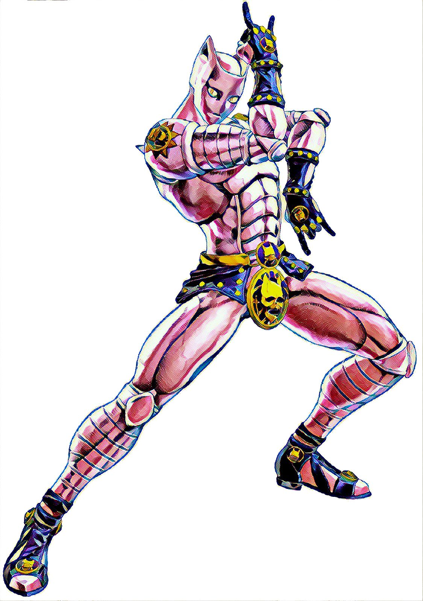
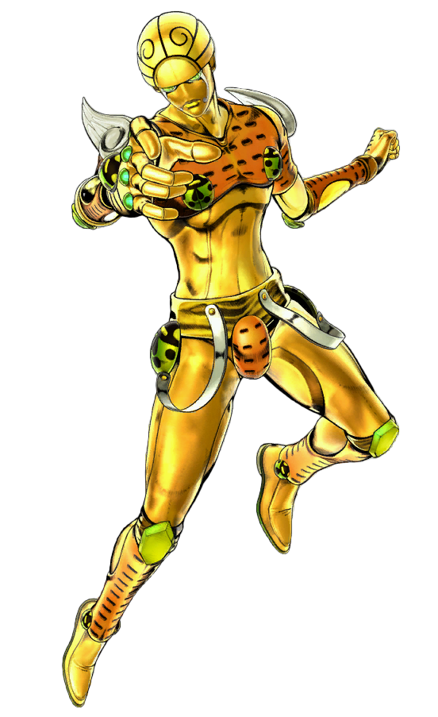

Stands
Los Stands son manifestaciones de la energía vital de una persona, con una habilidad única. Solo pueden verlos otros usuarios de Stand. Aparecen por primera vez en la Parte 3.
| Imagen | Stand | Usuario | Parte | Habilidad |
|---|---|---|---|---|
 | Star Platinum | Jotaro Kujo | Parte 3 | Gran fuerza y precisión; puede detener el tiempo unos segundos. |
 | The World | Dio Brando | Parte 3 | Detiene el tiempo. |
 | Hierophant Green | Noriaki Kakyoin | Parte 3 | Ataca a larga distancia con proyectiles de esmeralda. |
 | Crazy Diamond | Josuke Higashikata | Parte 4 | Restaura objetos y personas a su estado anterior. |
 | Killer Queen | Yoshikage Kira | Parte 4 | Convierte objetos en bombas. |
 | Gold Experience | Giorno Giovanna | Parte 5 | Crea vida a partir de objetos. |
Compara sus estadísticas en Niveles de poder.
Curiosidad
Muchos Stands llevan nombres de bandas y canciones de música occidental, un detalle muy característico de Araki.